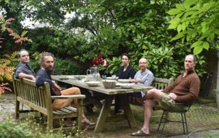

The Purpose of Kukkuṭāsana: Notes from a Workshop
The second workshop of the Haṭha Yoga Project was held at a cottage on the Isle of Wight in September 2017. The focus of the workshop was reading the section on āsana in a manuscript of the Yogacintāmaṇi held at the Scindia Oriental Research Institute, Ujjain, India. This manuscript contains descriptions of seventeen āsanas, as well as two long lists of āsanas, that are not found in other works. Mark Singleton and I are preparing a critical edition of this passage, which is based on nearly a dozen manuscripts of the Yogacintāmaṇi, [...]
Read the full post →